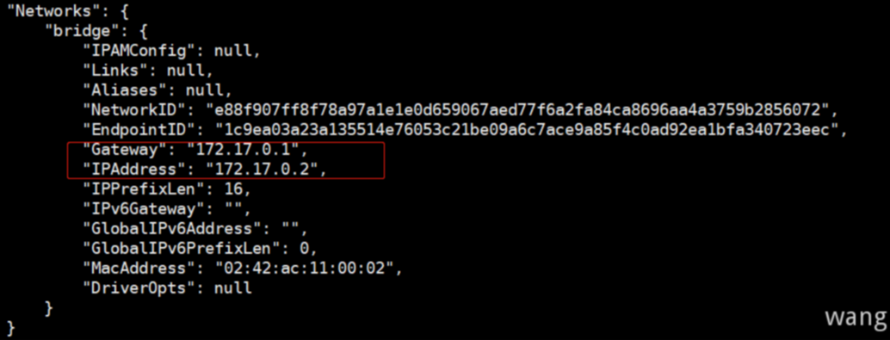

当安装Docker时，会自动创建三个网络。可以使用 docker network ls 命令列出网络
1 2 3 4 5
[root@centos-01 ~]# docker network ls NETWORK ID NAME DRIVER SCOPE cdda3ae8795a bridge bridge local ed7ffc7437dd host host local fa66bc1a17f4 none null local
四种网络模式
在使用 docker run 创建Docker容器时，可以用 --network 选项指定容器的网络模式，Docker有以下4种网络模式：
[root@centos-01 ~]# ip addr 1: lo: <LOOPBACK,UP,LOWER_UP> mtu 65536 qdisc noqueue state UNKNOWN group default qlen 1000 link/loopback 00:00:00:00:00:00 brd 00:00:00:00:00:00 inet 127.0.0.1/8 scope host lo valid_lft forever preferred_lft forever inet6 ::1/128 scope host valid_lft forever preferred_lft forever 2: ens33: <BROADCAST,MULTICAST,UP,LOWER_UP> mtu 1500 qdisc pfifo_fast state UP group default qlen 1000 link/ether 00:0c:29:50:75:ae brd ff:ff:ff:ff:ff:ff inet 192.168.126.143/24 brd 192.168.126.255 scope global noprefixroute ens33 valid_lft forever preferred_lft forever inet6 2409:8900:2b86:13cc:a958:4c6e:c162:309d/64 scope global noprefixroute dynamic valid_lft 3569sec preferred_lft 3569sec inet6 fe80::1f3a:afc1:82f6:3f66/64 scope link noprefixroute valid_lft forever preferred_lft forever 3: docker0: <NO-CARRIER,BROADCAST,MULTICAST,UP> mtu 1500 qdisc noqueue state DOWN group default link/ether 02:42:cb:f1:35:ea brd ff:ff:ff:ff:ff:ff inet 172.17.0.1/16 brd 172.17.255.255 scope global docker0 valid_lft forever preferred_lft forever
2)：创建容器并查看IP
1 2 3 4 5 6 7 8
[root@centos-01 ~]# docker run -d --name nginx nginx 8afe1080ba992614f96b6868dbbcab463e37c98f8d3fa729245d48c2e6a1e3fe
[root@centos-01 ~]# docker ps -a CONTAINER ID IMAGE COMMAND CREATED STATUS PORTS NAMES 8afe1080ba99 nginx "/docker-entrypoint.…" 3 seconds ago Up 2 seconds 80/tcp nginx
[root@centos-01 ~]# docker inspect nginx

发现其ip为 172.17.0.2 ,当容器桥接 docker0 后，会自动分配 ip 地址，之后的IP地址递增。
3)：查看网桥和端口连接
1 2 3
[root@centos-01 ~]# brctl show bridge name bridge id STP enabled interfaces docker0 8000.0242cbf135ea no veth3a98010
[root@centos-01 ~]# docker run -d --network=host --name nginx nginx ba0eb1c89ab6b505619db9b6789074db397a9f729ce18aeb82543986971b83d1
[root@centos-01 ~]# docker ps -a CONTAINER ID IMAGE COMMAND CREATED STATUS PORTS NAMES ba0eb1c89ab6 nginx "/docker-entrypoint.…" 3 seconds ago Up 2 seconds nginx
注意
不需要添加 -p 参数，因为它使用的就是主机的IP和端口，添加 -p 参数后，反而会出现警告： WARNING: Published ports are discarded when using host network mode 。
[root@centos-01 ~]# curl 192.168.126.143:80 <!DOCTYPE html> <html> <head> <title>Welcome to nginx!</title> <style> body { width: 35em; margin: 0 auto; font-family: Tahoma, Verdana, Arial, sans-serif; } </style> </head> <body> <h1>Welcome to nginx!</h1> <p>If you see this page, the nginx web server is successfully installed and working. Further configuration is required.</p>
<p>For online documentation and support please refer to <a href="http://nginx.org/">nginx.org</a>.<br/> Commercial support is available at <a href="http://nginx.com/">nginx.com</a>.</p>
<p><em>Thank you for using nginx.</em></p> </body> </html>